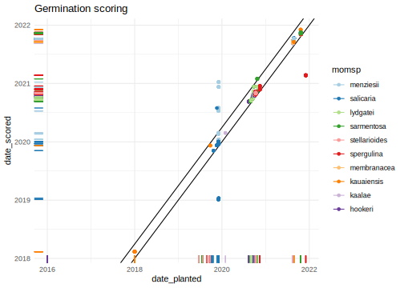
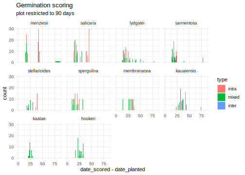
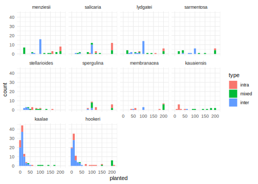
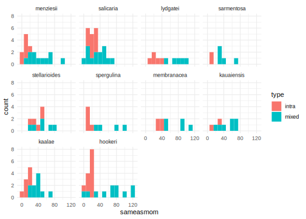
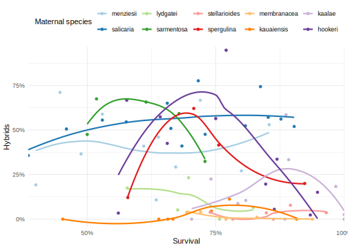
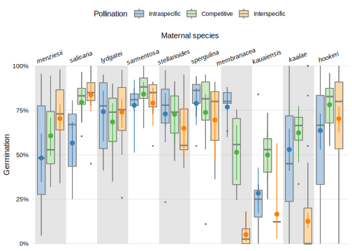
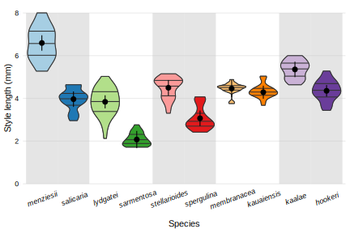
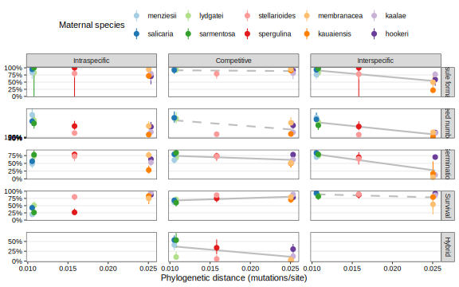
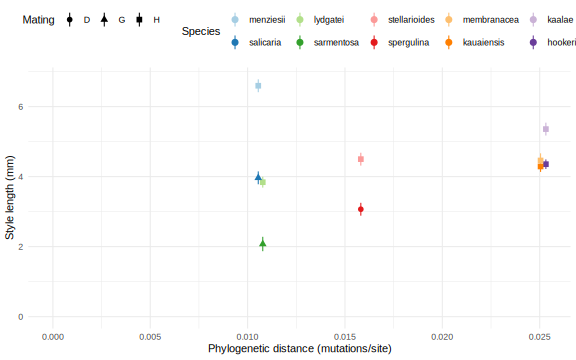
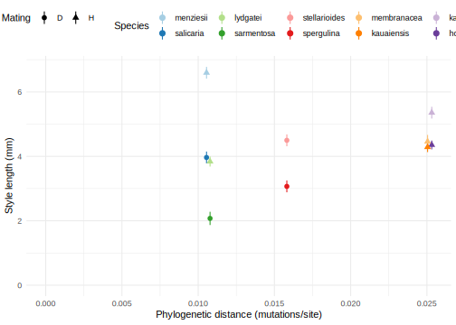

library(tidyverse)
library(glmmTMB)
library(broom)
library(emmeans)
library(knitr)
knitr::opts_chunk$set(comment="", cache=T, warning = F, message = F, fig.height=8, fig.width=8,
fig.path = "figures-comp/", dev = "svglite", dev.args=list(fix_text_size=FALSE))
options(digits=4, knitr.kable.NA = "")
ggplot2::theme_set(theme_minimal())Inventory
#in order of phylogenetic distance, pair order is by style length
sp_pairs <- c("menz"="menziesii", "sal"="salicaria",
"lydg"="lydgatei", "sarm" ="sarmentosa",
"stell"="stellarioides","sperg"="spergulina",
"memb"="membranacea","kaua"="kauaiensis",
"kaal"="kaalae", "hook"="hookeri")
typenames <- set_names(c("Intraspecific","Competitive","Interspecific"),c("intra","mixed","inter"))
type_pal <- set_names(c("#DC0060", "#86D400", "#F56E00"), names(typenames))
propnames <- set_names(c("Germinated","Survived","Hybrid"), c("prop.germ", "prop.alive", "prop.hybrid"))
momid.fixes <- read_tsv("data/Pollen competition - momid_fixes.tsv")
momid.fixes.germ <- momid.fixes %>% drop_na(germid, momid_fixed) %>% select(momid, momid_fixed) %>% deframe()
momid.fixes.surv <- momid.fixes %>% drop_na(survid, momid_fixed) %>% select(momid, momid_fixed) %>% deframe()
germ.pot <- read_tsv("data/Pollen competition - germination.tsv") %>%
mutate(dadspm = if_else(type=="mixed" & dadsp1==momsp, dadsp1, dadsp2), #rearrange dad1/dad2 to have dadsp match momsp
dadidm = if_else(type=="mixed" & dadsp1==momsp, dadid1, dadid2),
dadsp = if_else(type=="mixed" & dadsp1==momsp, dadsp2, dadsp1),
dadid = if_else(type=="mixed" & dadsp1==momsp, dadid2, dadid1), .after=momid) %>%
select(-starts_with("germinated_n"), -transplanted_n, -matches("dad(sp|id)[12]")) %>%
drop_na(germinated) %>% #exclude one contaminated cross and "intra inv" inviability tests
mutate(across(matches("sp"), ~ recode(.x, !!!sp_pairs)),
across(matches("(dad|mom)id"), ~str_remove_all(.x, "[ -]")),
across(matches("(dad|mom)id"), ~recode(.x, !!!momid.fixes.germ)), #TODO are the momid fixes applicable to dads too?
sxc = paste(momsp, type, sep="."),
#across(where(is.character), factor),
type=factor(type, levels= names(typenames)),
across(matches("sp"), ~ factor(.x, levels = sp_pairs)),
germinated = ifelse(germinated > planted, planted, germinated))
germ <- germ.pot %>% group_by(date_planted, type, momsp, sxc, momid, dadspm, dadidm, dadsp, dadid) %>% #date_planted splits 30 plant x plant crosses
summarize(planted = sum(planted), germinated = sum(germinated), .groups="drop") %>% # add together all the pots of one cross
mutate(prop.germ = germinated/planted) # proportion of planted seeds that germinated
surv <- read_tsv("data/Pollen competition - survival.tsv") %>%
mutate(dadspm = if_else(type=="mixed" & dadsp1==momsp, dadsp1, dadsp2), #rearrange dad1/dad2 to have dadsp match momsp
dadidm = if_else(type=="mixed" & dadsp1==momsp, dadid1, dadid2),
dadsp = if_else(type=="mixed" & dadsp1==momsp, dadsp2, dadsp1),
dadid = if_else(type=="mixed" & dadsp1==momsp, dadid2, dadid1), .after=momid) %>%
select(-matches("dad(sp|id)[12]")) %>% drop_na(dead) %>% #one row excluded
mutate(across(matches("(mom|dad)id"), ~str_remove_all(.x, "[ -]")),
across(matches("(dad|mom)id"), ~recode(.x, !!!momid.fixes.surv)),
sxc = paste(momsp, type, sep="."),
#across(where(is.character), factor),
type=factor(type, levels= names(typenames)),
across(matches("sp"), ~ factor(.x, levels = sp_pairs)),
across(all_of(c("sameasmom", "hybrid")), ~replace_na(.x,0)),
alive = sameasmom + hybrid,
total = alive + dead,
prop.hybrid = hybrid / alive,
prop.alive = alive / total)
surv %>% count(momsp, type, dadsp, name="crosses_surv") %>%
full_join(germ %>% count(momsp, type, dadsp, name="crosses_germ")) %>%
full_join(germ.pot %>% count(momsp, type, dadsp, name = "pots_germ")) %>%
mutate(pots_per_cross = pots_germ/crosses_germ) %>%
kable(caption="Number of crosses between individual plants used for germination and survival,
and how many pots the seeds filled")| momsp | type | dadsp | crosses_surv | crosses_germ | pots_germ | pots_per_cross |
|---|---|---|---|---|---|---|
| menziesii | intra | menziesii | 7 | 8 | 74 | 9.250 |
| menziesii | mixed | salicaria | 11 | 16 | 80 | 5.000 |
| menziesii | inter | salicaria | 19 | 18 | 87 | 4.833 |
| salicaria | intra | salicaria | 11 | 11 | 97 | 8.818 |
| salicaria | mixed | menziesii | 14 | 12 | 76 | 6.333 |
| salicaria | inter | menziesii | 13 | 12 | 53 | 4.417 |
| lydgatei | intra | lydgatei | 5 | 5 | 42 | 8.400 |
| lydgatei | mixed | sarmentosa | 5 | 11 | 56 | 5.091 |
| lydgatei | inter | sarmentosa | 19 | 20 | 90 | 4.500 |
| sarmentosa | intra | sarmentosa | 2 | 2 | 20 | 10.000 |
| sarmentosa | mixed | lydgatei | 5 | 12 | 63 | 5.250 |
| sarmentosa | inter | lydgatei | 7 | 9 | 41 | 4.556 |
| stellarioides | intra | stellarioides | 5 | 6 | 26 | 4.333 |
| stellarioides | mixed | spergulina | 6 | 6 | 27 | 4.500 |
| stellarioides | inter | spergulina | 10 | 7 | 13 | 1.857 |
| spergulina | intra | spergulina | 5 | 9 | 67 | 7.444 |
| spergulina | mixed | stellarioides | 4 | 8 | 50 | 6.250 |
| spergulina | inter | stellarioides | 4 | 3 | 14 | 4.667 |
| membranacea | intra | membranacea | 4 | 5 | 27 | 5.400 |
| membranacea | mixed | kauaiensis | 5 | 6 | 60 | 10.000 |
| membranacea | inter | kauaiensis | 1 | 4 | 18 | 4.500 |
| kauaiensis | intra | kauaiensis | 2 | 9 | 19 | 2.111 |
| kauaiensis | mixed | membranacea | 7 | 8 | 63 | 7.875 |
| kauaiensis | inter | membranacea | 1 | 1 | 3 | 3.000 |
| kaalae | intra | kaalae | 7 | 20 | 35 | 1.750 |
| kaalae | mixed | hookeri | 10 | 6 | 34 | 5.667 |
| kaalae | inter | hookeri | 11 | 73 | 118 | 1.616 |
| hookeri | intra | hookeri | 12 | 21 | 128 | 6.095 |
| hookeri | mixed | kaalae | 11 | 8 | 70 | 8.750 |
| hookeri | inter | kaalae | 34 | 61 | 107 | 1.754 |
# to run this, comment out across(matches("(mom|dad)id"), ~str_remove_all(.x, "[ -]")) lines above
# left_join(count(germ, momsp, germid=momid, name="germ") %>% mutate(momid=str_remove_all(germid, "[ -]")),
# germ %>% group_by(momsp, germid=momid) %>% summarize(tot.germ=sum(germinated))) %>%
# full_join(count(surv, momsp, survid=momid, name="surv")%>% mutate(momid=str_remove_all(survid, "[ -]"))) %>%
# arrange(momsp, momid) %>% select(momsp, momid, germid, survid, tot.germ, germ, surv) %>%
# add_count(momid)
# # write_tsv("data/survgerm_momids.tsv", na="")
mating <- read_tsv("data/Pollen competition - mating.tsv") %>%
left_join(tibble(momsp=sp_pairs, pair = factor(rep(1:5, each=2)))) %>%
mutate(momsp = factor(momsp, level=sp_pairs))
styles <- read_tsv("data/Pollen competition - style_length.tsv") %>%
mutate(momsp = factor(sp_pairs[momsp], levels=sp_pairs))Scoring dates
The date scored is not always available or accurate, do not use for analysis.
germ.pot %>% ggplot(aes(x=date_planted, y=date_scored, color=momsp)) +
geom_abline(slope=1, intercept=0) + geom_abline(slope=1, intercept=90) + geom_point() + geom_rug() +
scale_color_brewer(palette="Paired") + labs(title="Germination scoring") #TODO check mis-entered dates
germ.pot %>% filter(abs(date_scored-date_planted)<=90) %>% ggplot(aes(x=date_scored - date_planted, fill=type)) +
facet_wrap(vars(momsp)) +
geom_histogram(binwidth=1) + scale_x_continuous(limits=c(0,NA)) +
labs(title="Germination scoring", subtitle = "plot restricted to 90 days")
surv %>% ggplot(aes(x=date_planted, y=date_scored, color=momsp)) + geom_point() + geom_rug() +
scale_color_brewer(palette="Paired") + labs(title="Survival scoring")
Histograms
ggplot(germ, aes(x=planted, fill=type)) + geom_histogram(binwidth=10) + facet_wrap(vars(momsp))
ggplot(germ, aes(x=germinated, fill=type)) + geom_histogram(binwidth=10) + facet_wrap(vars(momsp))
ggplot(filter(surv, type !="inter"), aes(x=sameasmom, fill=type)) + geom_histogram(binwidth=10) + facet_wrap(vars(momsp))
ggplot(filter(surv, type !="intra"), aes(x=hybrid, fill=type)) + geom_histogram(binwidth=1) + facet_wrap(vars(momsp))#lots of 20s
ggplot(surv, aes(x=dead, fill=type)) + geom_histogram(binwidth=10) + facet_wrap(vars(momsp), scales="free_y")
pct_y <- scale_y_continuous(breaks=(0:4)/4, labels=~scales::percent(.,accuracy=1), expand=c(0,0))
pct_x <- scale_x_continuous(breaks=(0:4)/4, labels=~scales::percent(.,accuracy=1), expand=c(0,0))
germ.surv <- full_join(germ, surv) #TODO fix matching
germ.surv %>% mutate(germalive = paste(is.na(germinated), is.na(alive)) %>%
recode(`FALSE FALSE`="both", `FALSE TRUE`="survival", `TRUE FALSE`="germination")) %>%
count(type, momsp, germalive) %>% pivot_wider(names_from="germalive", values_from="n") %>%
kable(kable="Matching crosses between germination and survival datasets")| type | momsp | both | survival | germination |
|---|---|---|---|---|
| intra | menziesii | 7 | 1 | |
| intra | salicaria | 6 | 5 | 5 |
| intra | lydgatei | 4 | 1 | 1 |
| intra | sarmentosa | 2 | ||
| intra | stellarioides | 5 | 1 | |
| intra | spergulina | 4 | 5 | 1 |
| intra | membranacea | 4 | 1 | |
| intra | kauaiensis | 1 | 8 | 1 |
| intra | kaalae | 7 | 13 | |
| intra | hookeri | 11 | 10 | 1 |
| mixed | menziesii | 8 | 8 | 3 |
| mixed | salicaria | 11 | 1 | 3 |
| mixed | lydgatei | 11 | 5 | |
| mixed | sarmentosa | 12 | 5 | |
| mixed | stellarioides | 6 | 6 | |
| mixed | spergulina | 8 | 4 | |
| mixed | membranacea | 4 | 2 | 1 |
| mixed | kauaiensis | 6 | 2 | 1 |
| mixed | kaalae | 4 | 2 | 6 |
| mixed | hookeri | 8 | 11 | |
| inter | menziesii | 16 | 2 | 3 |
| inter | salicaria | 10 | 2 | 3 |
| inter | lydgatei | 9 | 11 | 10 |
| inter | sarmentosa | 6 | 3 | 1 |
| inter | stellarioides | 5 | 2 | 5 |
| inter | spergulina | 2 | 1 | 2 |
| inter | membranacea | 4 | 1 | |
| inter | kauaiensis | 1 | 1 | |
| inter | kaalae | 11 | 62 | |
| inter | hookeri | 34 | 27 |
ggplot(germ.surv, aes(x=prop.germ, y=prop.alive, color=momsp)) +
geom_point() + geom_smooth(se=F, span=1.1) + pct_y + pct_x + theme(legend.position="top") +
scale_color_brewer(palette="Paired") + labs(x="Germination",y="Survival", color="Maternal species") ggplot(germ.surv %>% filter(type=="mixed"), aes(x=prop.alive, y=prop.hybrid, color=momsp)) +
geom_point() + geom_smooth(se=F, span=1.1)+ pct_y + pct_x + theme(legend.position="top") +
scale_color_brewer(palette="Paired") + labs(x="Survival",y="Hybrids", color="Maternal species") 
ggplot(germ.surv %>% filter(type=="mixed"), aes(x=prop.germ, y=prop.hybrid, color=momsp)) +
geom_point() + geom_smooth(se=F, span=1.1)+pct_y + pct_x + theme(legend.position="top") +
scale_color_brewer(palette="Paired") + labs(x="Germination",y="Hybrids", color="Maternal species") 
Models
Expand this code to see the model specifications. The models have the following settings:
- response variable: proportion seeds that germinated, proportion seedlings that survived, proportion of live seedlings that are hybrids
- sxc: the combined maternal plant species and crosstype (within species, between species, mixed pollen)
- momid: random effects of the maternal plant genotype
- family: betabinomial (for binary variables)
comp.mod <- list(
prop.germ = glmmTMB(prop.germ ~ sxc + (1|momid), family="betabinomial", data=germ, weights = planted),
prop.alive = glmmTMB(prop.alive ~ sxc + (1|momid), family="betabinomial", data=surv, weights = total),
prop.hybrid = glmmTMB(prop.hybrid ~ sxc + (1|momid), family="betabinomial", data=filter(surv, type=="mixed"), weights = alive))Maternal effects
comp.ranef <- map_dfr(comp.mod, ~as.data.frame(ranef(.x)), .id="trait") %>% as_tibble() %>%
rename(momid=grp, estimate = condval, sd = condsd) %>% select(-component, -grpvar, -term) %>%
mutate(momid= as.character(momid)) %>%
left_join(count(germ, momsp.germ=momsp, momid, name="germ")) %>%
left_join(count(surv, momsp.surv=momsp, momid, name="surv")) %>%
mutate(momsp = coalesce(momsp.germ, momsp.surv), .keep="unused")
ggplot(comp.ranef, aes(y=estimate, ymin=estimate-sd, ymax=estimate+sd, x=paste(momsp,momid), color=momsp)) +
facet_wrap(vars(trait)) + geom_pointrange() + coord_flip() + scale_color_brewer(palette="Paired")
comp.ranef %>% select(-sd) %>% pivot_wider(names_from="trait", values_from="estimate") %>%
ggplot(aes(y=prop.alive, x=prop.germ, color=momsp)) + geom_point() + scale_color_brewer(palette="Paired") +
geom_smooth(aes(group=1), color="grey30") + theme(legend.position="top")+
labs(x="Maternal effect on germination", y="Maternal effect on survival", color="Maternal species")
comp.ranef %>% select(-sd) %>% pivot_wider(names_from="trait", values_from="estimate") %>%
ggplot(aes(y=prop.hybrid, x=prop.alive, color=momsp)) + geom_point() + scale_color_brewer(palette="Paired") +
geom_smooth(aes(group=1), color="grey30") + theme(legend.position="top")+
labs(x="Maternal effect on survival", y="Maternal effect on hybrids", color="Maternal species")
Inference
P-values for the overall effect of species and crosstype, or collection date, on the trait.
comp.test <- map_dfr(comp.mod, ~car::Anova(.) %>% tidy(), .id="trait")
comp.test %>% mutate(term=recode(term, sxc = "species and crosstype"),
p.value=format(p.value,digits=2)) %>%
kable(digits=1, caption="ANOVA of GLMM (Type III Wald chisquare tests)")| trait | term | statistic | df | p.value |
|---|---|---|---|---|
| prop.germ | species and crosstype | 277.4 | 29 | 2.3e-42 |
| prop.alive | species and crosstype | 353.9 | 29 | 1.5e-57 |
| prop.hybrid | species and crosstype | 70.6 | 9 | 1.2e-11 |
comp.emm <- map_dfr(comp.mod, ~emmeans(., ~sxc) %>% summary(type="response") %>% #average over collect date
tidy %>% rename(estimate=prob), .id="trait") %>%
separate(sxc, into = c("momsp","type")) %>%
mutate(momsp=factor(momsp, levels=sp_pairs),
type=factor(type, levels= names(typenames)),
trait=factor(trait, levels=names(propnames)))
#doesn't work, compares all to the first level (hookeri)
#hybrid.half <- multcomp::glht(comp.mod$prop.hybrid, multcomp::mcp(sxc = paste0(sp_pairs[-7],".mixed = 0")))
#compare to null of 50% hybrids, since pollen mixtures were 50-50
hybrid.test <- surv %>% filter(type=="mixed") %>%
group_by(momsp, type, dadsp) %>%
summarize(total=sum(total), alive=sum(alive), hybrid=sum(hybrid), crosses=n(), .groups="drop") %>%
mutate(total_per_c = total/crosses, alive_per_c = alive / crosses,
prop.hybrid = hybrid/alive,
p = map2_dbl(hybrid, alive, ~prop.test(x=.x, n=.y, p = 0.5)$p.value),
p.adj = p.adjust(p, "bonferroni"),
stars = cut(p.adj, breaks = c(-Inf, 0.01, 0.05, 0.10, Inf),
labels = c("***", "**", "*", "n.s."), right = FALSE))Plots
Boxplots of the germination and survival proportions in each plant x plant cross. Germination proportions are calculated across all pots of a given plant x plant cross. Points show estimated marginal mean and 95% CI.
sp_theme <- theme(legend.position = "top",
panel.grid.major.x=element_blank(), panel.grid.minor.y=element_blank(),
axis.text.x = element_text(angle=20), axis.text = element_text(color="black"))
alternate <- geom_tile(data=tibble(momsp=sp_pairs[seq(1,10,by=2)]), aes(x=momsp, y=0.5, height=1, width=1), alpha=0.15, fill="grey", inherit.aes = F)
ggplot(germ, aes(x=momsp, fill=type, y=prop.germ)) +
geom_boxplot(position = position_dodge(width=0.9), color="grey50", outlier.size=0.5) + alternate+
geom_pointrange(data=filter(comp.emm, trait=="prop.germ"), aes(y=estimate, ymax=conf.high, ymin=conf.low),
position = position_dodge(width=0.9), size=0.3, show.legend=F) +
scale_fill_manual(values=type_pal, labels=typenames) +
labs(x="Maternal species", y="Germination", fill="Pollination") + sp_theme
ggplot(surv, aes(x=momsp, fill=type, y=prop.alive)) +
geom_boxplot(position = position_dodge(width=0.9), color="grey50", outlier.size=0.5) + alternate+
geom_pointrange(data=filter(comp.emm, trait=="prop.alive"), aes(y=estimate, ymax=conf.high, ymin=conf.low),
position = position_dodge(width=0.9), size=0.3, show.legend=F) +
scale_fill_manual(values=type_pal, labels=typenames) +
labs(x="Maternal species", y="Survival", fill="Pollination") + sp_theme
ggplot(filter(surv, type=="mixed"), aes(x=momsp, y=prop.hybrid, fill=momsp)) +
geom_hline(yintercept=0.5)+ geom_violin(scale="width", draw_quantiles = c(0.25,0.5,0.75))+
geom_pointrange(data=left_join(filter(comp.emm, trait=="prop.hybrid"), hybrid.test),
aes(y=estimate, ymax=conf.high, ymin=conf.low, shape=p.adj < 0.05)) +
scale_shape_manual("Different from 50%", values=c(1, 19), labels=c("no","yes"))+
geom_text(data=hybrid.test, aes(y=1.1, label=crosses))+
#geom_text(data=hybrid.test, aes(y=1.1, label=alive))+
scale_fill_brewer(palette="Paired", guide="none") + pct_y+
labs(x="Maternal species", y="Hybrids from competitive pollinations") + sp_theme
Tested whether the proportion of hybrids significantly differed from 50%, accounting for multiple comparisons. Violin plots show proportions for each plant x plant cross. The number of plant x plant crosses indicated above the plot.
Style length
count(styles, momsp, plantid) %>% count(momsp) %>% kable(caption = "Number of plants for style length")| momsp | n |
|---|---|
| menziesii | 5 |
| salicaria | 5 |
| lydgatei | 7 |
| sarmentosa | 4 |
| stellarioides | 5 |
| spergulina | 5 |
| membranacea | 4 |
| kauaiensis | 8 |
| kaalae | 5 |
| hookeri | 9 |
styles.emm <- glmmTMB(style_length_mm ~ momsp + (1|plantid), data=styles) %>%
emmeans(~momsp) %>% summary(type="response") %>% tidy %>% rename(style_length_mm = estimate) %>%
left_join(mating) %>% group_by(pair) %>%
mutate(momsp=factor(momsp, levels=sp_pairs),
style_diff_mm = style_length_mm-min(style_length_mm))
ggplot(styles, aes(x=momsp, y=style_length_mm, fill=momsp)) +
geom_violin(scale="width", draw_quantiles = c(0.25,0.5,0.75))+
geom_pointrange(data=styles.emm, aes(ymax=conf.high, ymin=conf.low)) +
scale_fill_brewer(palette="Paired", guide="none") + scale_y_continuous(limits=c(0,NA))+
labs(x="Maternal species", y="Style length (mm)") + sp_theme
Phylogenetic distance and style length
Load Schiedea tree inferred with RAxML from Willyard et al. nuclear dataset (no chloroplast data, 1 accession per species).
library(ape)
library(RColorBrewer)
#devtools::install_github('gastonstat/arcdiagram')
library(igraph)
library(arcdiagram)
sp_pal <- set_names(brewer.pal(length(sp_pairs), "Paired"), sp_pairs)
tree <- read.nexus("data/RAxML_1ps_nocp_bipartitionsBranchLabels.sch.short.nobs.nex")
plot(tree, tip.color = sp_pal[tree$tip.label])
par(mfrow=c(1,2))
par(mar=c(1.5,0,1.5,0))
tree_pairs <- tree %>% keep.tip(sp_pairs)
plot(tree_pairs, tip.color = sp_pal[tree_pairs$tip.label])
par(mar=c(0,0,0,0))
sp_pairs %>% matrix(ncol=2, byrow=T) %>%
arcplot(show.labels=F, horizontal=F, ordering=tree_pairs$tip.label,
col.arcs=sp_pal[(1:5)*2], col.nodes = sp_pal)
par(mfrow=c(1,1))
hybrid.phylodist <- comp.emm %>% left_join(select(hybrid.test, momsp, dadsp, -type)) %>%
mutate(pd = map2_dbl(as.character(momsp), as.character(dadsp), ~cophenetic(tree_pairs)[.x,.y])) %>%
select(-df)
#TODO use a binomial GLM here, with the raw data?
hybrid.phylodist.test <- hybrid.phylodist %>% left_join(styles.emm, by="momsp") %>% group_by(trait, type) %>% nest() %>%
mutate(model = map(data, ~lm(estimate ~ pd + style_diff_mm, data=.x)),
anova = map(model, ~tidy(car::Anova(.x)))) %>%
select(-data, -model) %>% unnest(anova) %>% filter(term !="Residuals")
hybrid.phylodist.test %>% select(trait, type, term, p.value) %>% filter(type !="intra") %>%
mutate(trait = propnames[trait], type= typenames[type],
term=recode(term, pd="Phylogenetic distance", style_diff_mm="Style length difference")) %>%
pivot_wider(names_from=term, values_from=p.value) %>%
kable(caption = "p-values from models of each proportion", digits=3)| trait | type | Phylogenetic distance | Style length difference |
|---|---|---|---|
| Germinated | Interspecific | 0.007 | 0.433 |
| Germinated | Competitive | 0.044 | 0.143 |
| Survived | Interspecific | 0.307 | 0.777 |
| Survived | Competitive | 0.044 | 0.466 |
| Hybrid | Competitive | 0.023 | 0.141 |
ggplot(left_join(hybrid.phylodist, filter(hybrid.phylodist.test, term=="pd")), aes(x=pd, y=estimate)) +
facet_grid(trait~type, labeller=as_labeller(c(propnames, typenames)))+
geom_smooth(aes(linetype=paste(p.value < 0.05, type=="intra")), method="lm", se=F, color="grey") +
geom_pointrange(aes(ymax=conf.high, ymin=conf.low, color=momsp)) + scale_color_brewer(palette="Paired") + pct_y+
scale_linetype_manual(values=c(2,0,1,0), guide="none") + scale_alpha_manual(breaks=c(T,F), values=c(0.5, 1))+
labs(x="Phylogenetic distance (mutations/site)", color="Maternal species") + theme_bw() +
theme(axis.title.y=element_blank(), axis.text=element_text(color="black"), legend.position="top",
panel.grid.minor = element_blank(), panel.grid.major.x=element_blank(), panel.spacing = unit(1, "lines"))
Regressions against the phylogenetic distance of each species pair. Solid regression lines are statistically significant in a model that also included the difference in style length within pairs. Note that for reference, data for intraspecific crosses is plotted with the phylogenetic distance to its paired species, which doesn’t make great sense.
Below, lines show the effect of style length within each pair.
ggplot(left_join(comp.emm, select(styles.emm, momsp, style_length_mm, mating)), aes(x=style_length_mm, y=estimate)) +
facet_grid(trait~type, labeller=as_labeller(c(propnames, typenames)))+
geom_line(aes(group=pair, color=momsp))+
geom_pointrange(aes(ymax=conf.high, ymin=conf.low, color=momsp, shape=mating)) + scale_color_brewer(palette="Paired") + pct_y+
labs(x="Style length (mm)", color="Maternal species", shape="Mating") + theme_bw() +
theme(axis.title.y=element_blank(), axis.text=element_text(color="black"), legend.position="top",
panel.grid.minor = element_blank(), panel.grid.major.x=element_blank(), panel.spacing = unit(1, "lines"))
hybrid.phylodist %>% filter(trait=="prop.hybrid", type=="mixed") %>%
left_join(select(styles.emm, momsp, style_length_mm, mating, se=std.error)) %>%
ggplot(aes(x=pd, y=style_length_mm, color=momsp, shape=mating)) +
geom_pointrange(aes(ymin=style_length_mm-se, ymax=style_length_mm+se)) +
scale_color_brewer(palette="Paired") + coord_cartesian(xlim=c(0, NA), ylim=c(0,NA)) +
labs(x="Phylogenetic distance (mutations/site)", y="Style length (mm)", color="Species", shape="Mating") +
theme(legend.position = "top")
The range of phylogenetic distances and style lengths in the study. The species in each pair with a longer style is given a lighter color.